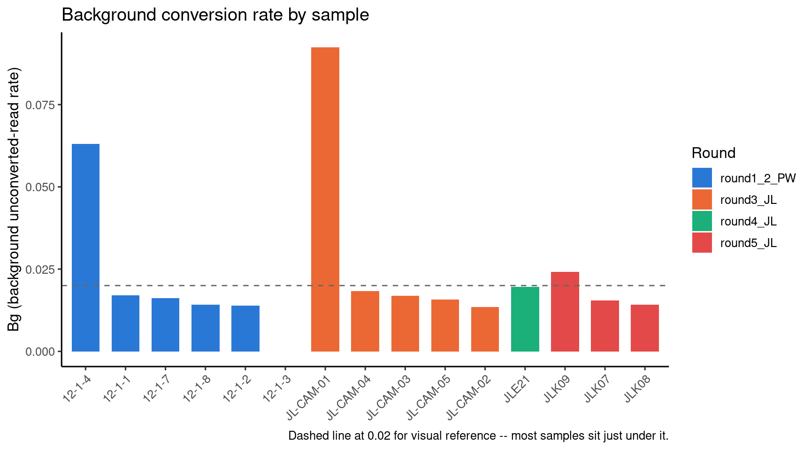

Last updated: 2026-08-20
Checks: 6 1
Knit directory: camseq-m6a/
This reproducible R Markdown analysis was created with workflowr (version 1.7.1). The Checks tab describes the reproducibility checks that were applied when the results were created. The Past versions tab lists the development history.
The R Markdown is untracked by Git. To know which version of the R
Markdown file created these results, you’ll want to first commit it to
the Git repo. If you’re still working on the analysis, you can ignore
this warning. When you’re finished, you can run
wflow_publish to commit the R Markdown file and build the
HTML.
Great job! The global environment was empty. Objects defined in the global environment can affect the analysis in your R Markdown file in unknown ways. For reproduciblity it’s best to always run the code in an empty environment.
The command set.seed(20250226) was run prior to running
the code in the R Markdown file. Setting a seed ensures that any results
that rely on randomness, e.g. subsampling or permutations, are
reproducible.
Great job! Recording the operating system, R version, and package versions is critical for reproducibility.
Nice! There were no cached chunks for this analysis, so you can be confident that you successfully produced the results during this run.
Great job! Using relative paths to the files within your workflowr project makes it easier to run your code on other machines.
Great! You are using Git for version control. Tracking code development and connecting the code version to the results is critical for reproducibility.
The results in this page were generated with repository version db9d81b. See the Past versions tab to see a history of the changes made to the R Markdown and HTML files.
Note that you need to be careful to ensure that all relevant files for
the analysis have been committed to Git prior to generating the results
(you can use wflow_publish or
wflow_git_commit). workflowr only checks the R Markdown
file, but you know if there are other scripts or data files that it
depends on. Below is the status of the Git repository when the results
were generated:
Ignored files:
Ignored: .Rhistory
Untracked files:
Untracked: analysis/background_rate_summary.Rmd
Note that any generated files, e.g. HTML, png, CSS, etc., are not included in this status report because it is ok for generated content to have uncommitted changes.
There are no past versions. Publish this analysis with
wflow_publish() to start tracking its development.
Bg_<sample> is the pipeline’s own per-sample
estimate of background (non-m6A) unconverted-read rate – the mean
per-site methylation ratio (Uncon/Depth) across every
covered genomic position for that sample, NaNs dropped (see Pipeline
overview for the exact formula from filter_sites.py).
It’s the null rate every site’s binomial significance test is measured
against.
This page pulls Bg for every sample across all 4 rounds
into one place, to check whether the JLK09 elevation we found while
investigating round 5 (QC – round 5)
is an isolated case or part of a broader pattern.
library(data.table)
library(ggplot2)
library(knitr)
library(kableExtra)
bg_dt <- fread("/project/xinhe/xsun/camseq/2.qc/background_rate_summary.tsv")
bg_dt[, sample := factor(sample, levels = sample[order(round, -Bg)])]ggplot(bg_dt, aes(x = sample, y = Bg, fill = round)) +
geom_col(width = 0.7) +
geom_hline(yintercept = 0.02, linetype = "dashed", color = "grey40") +
scale_fill_manual(values = c(
round1_2_PW = "#2a78d6", round3_JL = "#eb6834", round4_JL = "#1baf7a", round5_JL = "#e34948"
)) +
labs(
x = NULL, y = "Bg (background unconverted-read rate)", fill = "Round",
title = "Background conversion rate by sample",
caption = "Dashed line at 0.02 for visual reference -- most samples sit just under it."
) +
theme_classic(base_size = 12) +
theme(axis.text.x = element_text(angle = 45, hjust = 1))
kable(bg_dt[order(round, -Bg)], digits = c(NA, NA, 5, 0, 0)) %>%
kable_styling(bootstrap_options = c("striped", "hover", "condensed"), full_width = FALSE)| round | sample | Bg | raw_reads | dedup_genome_reads |
|---|---|---|---|---|
| round1_2_PW | 12-1-4 | 0.06309 | 10853702 | 3778500 |
| round1_2_PW | 12-1-1 | 0.01697 | 31576825 | 5312132 |
| round1_2_PW | 12-1-7 | 0.01612 | 43154654 | 7846737 |
| round1_2_PW | 12-1-8 | 0.01412 | 20348106 | 6680736 |
| round1_2_PW | 12-1-2 | 0.01394 | 63314498 | 15322526 |
| round1_2_PW | 12-1-3 | 0.00000 | 997 | 292 |
| round3_JL | JL-CAM-01 | 0.09236 | 55084970 | 35213036 |
| round3_JL | JL-CAM-04 | 0.01835 | 70857456 | 3630731 |
| round3_JL | JL-CAM-03 | 0.01689 | 75825060 | 9297295 |
| round3_JL | JL-CAM-05 | 0.01574 | 77186725 | 14304716 |
| round3_JL | JL-CAM-02 | 0.01340 | 80643276 | 2428362 |
| round4_JL | JLE21 | 0.01959 | 43516212 | 27346137 |
| round5_JL | JLK09 | 0.02417 | 123778236 | 74005631 |
| round5_JL | JLK07 | 0.01551 | 106422920 | 59465486 |
| round5_JL | JLK08 | 0.01418 | 115648962 | 66694738 |
Most samples across all 4 rounds cluster tightly in the 0.013-0.020 range. Four samples stand out, for three different reasons:
kable(bg_dt[sample == "12-1-3"]) %>%
kable_styling(bootstrap_options = c("striped", "hover", "condensed"), full_width = FALSE)| round | sample | Bg | raw_reads | dedup_genome_reads |
|---|---|---|---|---|
| round1_2_PW | 12-1-3 | 0 | 997 | 292 |
Bg=0 looks clean but isn’t – this sample had only
997 raw reads total (vs. tens of millions for every
other sample), and only 2 total mapped positions across the
entire 39.4M-position genome table (max depth at either
position: 1). This is a sequencing/library failure, not a
conversion-rate measurement. Every downstream number for this sample
(including its earlier-reported “0 called sites”) is uninterpretable,
not evidence of anything. Needs its own investigation –
worth checking whether the correct FASTQ files were used for this
sample, or whether it needs re-sequencing.
Both have plenty of supporting reads (35.2M and 3.8M deduped genome reads respectively) – this is a real signal, not a data artifact. Both are input/untreated control samples, not treated experimental samples.
kable(bg_dt[sample %in% c("JL-CAM-01", "12-1-4")]) %>%
kable_styling(bootstrap_options = c("striped", "hover", "condensed"), full_width = FALSE)| round | sample | Bg | raw_reads | dedup_genome_reads |
|---|---|---|---|---|
| round1_2_PW | 12-1-4 | 0.0630875 | 10853702 | 3778500 |
| round3_JL | JL-CAM-01 | 0.0923635 | 55084970 | 35213036 |
Checking Bg on the rRNA (genes) reference
too – a heavily structured RNA class – shows the two behave differently,
suggesting they may not share the same root cause despite the similar
surface pattern:
rrna_check <- data.table(
sample = c("12-1-4", "JL-CAM-01"),
Bg_genome = c(0.06309, 0.09236),
Bg_rRNA_genes = c(0.05941, 0.15682)
)
kable(rrna_check, digits = 5) %>%
kable_styling(bootstrap_options = c("striped", "hover", "condensed"), full_width = FALSE)| sample | Bg_genome | Bg_rRNA_genes |
|---|---|---|
| 12-1-4 | 0.06309 | 0.05941 |
| JL-CAM-01 | 0.09236 | 0.15682 |
Open question for the wet-lab side: are input/untreated control samples supposed to skip the chemical A->G conversion treatment step (in which case elevated background is expected and correct), or should they go through the same treatment as experimental samples (in which case this indicates a real technical issue)? That single question resolves whether this pattern is by design or a problem – and it’s more robust than the JLK09 case below, since it’s consistent across two independent rounds.
kable(bg_dt[sample %in% c("JLK07", "JLK08", "JLK09")]) %>%
kable_styling(bootstrap_options = c("striped", "hover", "condensed"), full_width = FALSE)| round | sample | Bg | raw_reads | dedup_genome_reads |
|---|---|---|---|---|
| round5_JL | JLK07 | 0.0155083 | 106422920 | 59465486 |
| round5_JL | JLK08 | 0.0141762 | 115648962 | 66694738 |
| round5_JL | JLK09 | 0.0241714 | 123778236 | 74005631 |
Unlike cases 2-3, JLK09 is a treated experimental sample (Mfs_LPS/RIH007), not an input/control – so the “input samples skip conversion” explanation doesn’t apply here. Its elevation is smaller in absolute terms (0.024 vs. 0.06-0.09) but happens in a sample where no obvious protocol difference is expected, which makes it harder to explain than cases 2-3. See QC – round 5 and Round 5 miRNA sites for where this shows up downstream (JLK09 consistently calls more sites than JLK07/JLK08 across every cutoff checked, including at miRNA loci specifically).
Debugging directions discussed so far, none of which require new wet-lab work:
Bg on genes (rRNA) vs genome for
JLK09 specifically, same check as cases 2-3 above (not yet run for this
sample).From filter_sites.py (see Pipeline
overview for the full derivation):
df_input.with_columns(
(pl.col(f"Uncon_{name}") / pl.col(f"Depth_{name}")).alias(f"Ratio_{name}")
for name in names
).with_columns(
pl.col(f"Ratio_{name}").drop_nans().mean().alias(f"Bg_{name}")
for name in names
)An unweighted mean of per-site ratios across every position that
sample covers at all (Depth > 0) – every site counts
equally regardless of its own depth. This is why case 1 (12-1-3) breaks:
with only 2 total covered positions, the “mean” is computed over almost
nothing.
sessionInfo()R version 4.2.0 (2022-04-22)
Platform: x86_64-pc-linux-gnu (64-bit)
Running under: Red Hat Enterprise Linux 8.4 (Ootpa)
Matrix products: default
BLAS/LAPACK: /software/openblas-0.3.13-el8-x86_64/lib/libopenblas_skylakexp-r0.3.13.so
locale:
[1] LC_CTYPE=C.UTF-8 LC_NUMERIC=C LC_TIME=C.UTF-8
[4] LC_COLLATE=C.UTF-8 LC_MONETARY=C.UTF-8 LC_MESSAGES=C.UTF-8
[7] LC_PAPER=C.UTF-8 LC_NAME=C LC_ADDRESS=C
[10] LC_TELEPHONE=C LC_MEASUREMENT=C.UTF-8 LC_IDENTIFICATION=C
attached base packages:
[1] stats graphics grDevices utils datasets methods base
other attached packages:
[1] kableExtra_1.4.1 knitr_1.51 ggplot2_3.4.2 data.table_1.14.4
[5] workflowr_1.7.1
loaded via a namespace (and not attached):
[1] tidyselect_1.2.0 xfun_0.59 bslib_0.3.1 colorspace_2.0-3
[5] vctrs_0.6.1 generics_0.1.3 viridisLite_0.4.0 htmltools_0.5.7
[9] yaml_2.3.5 utf8_1.2.2 rlang_1.1.2 later_1.3.0
[13] pillar_1.9.0 jquerylib_0.1.4 glue_1.6.2 withr_2.5.0
[17] lifecycle_1.0.4 stringr_1.5.0 munsell_0.5.0 gtable_0.3.0
[21] evaluate_0.15 labeling_0.4.2 callr_3.7.0 fastmap_1.1.0
[25] httpuv_1.6.5 ps_1.7.0 fansi_1.0.3 Rcpp_1.1.1-1.1
[29] promises_1.2.0.1 scales_1.2.0 jsonlite_2.0.0 farver_2.1.0
[33] systemfonts_1.0.4 otel_0.2.0 fs_1.5.2 digest_0.6.29
[37] stringi_1.7.6 processx_3.5.3 dplyr_1.1.2 getPass_0.2-2
[41] rprojroot_2.0.3 grid_4.2.0 cli_3.6.2 tools_4.2.0
[45] magrittr_2.0.3 sass_0.4.1 tibble_3.2.1 whisker_0.4
[49] pkgconfig_2.0.3 xml2_1.3.3 rmarkdown_2.31 svglite_2.1.0
[53] httr_1.4.8 rstudioapi_0.14 R6_2.5.1 git2r_0.30.1
[57] compiler_4.2.0